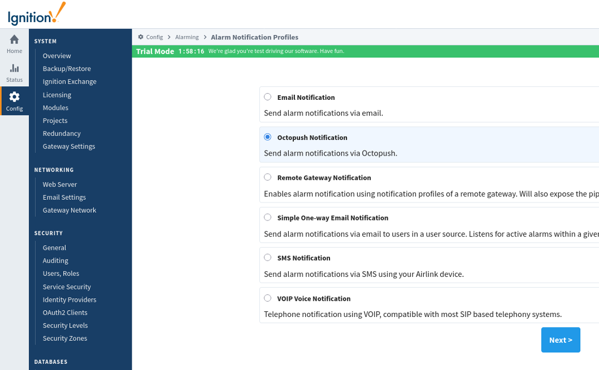
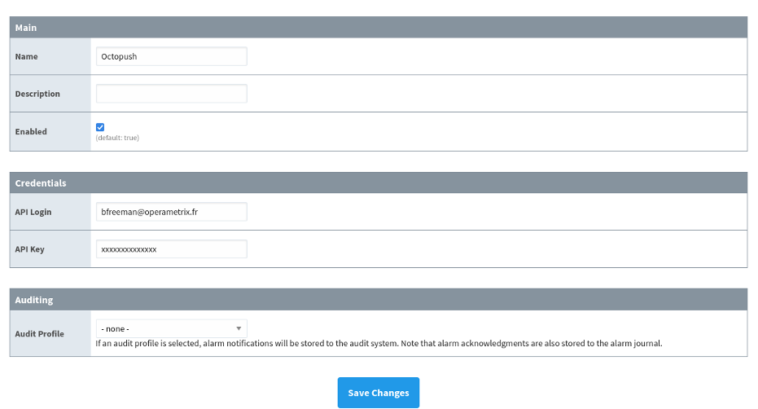
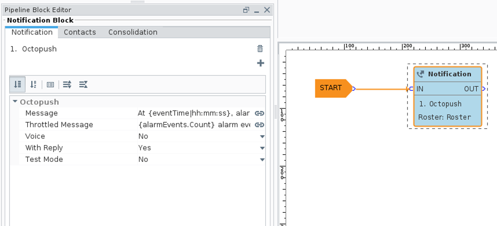
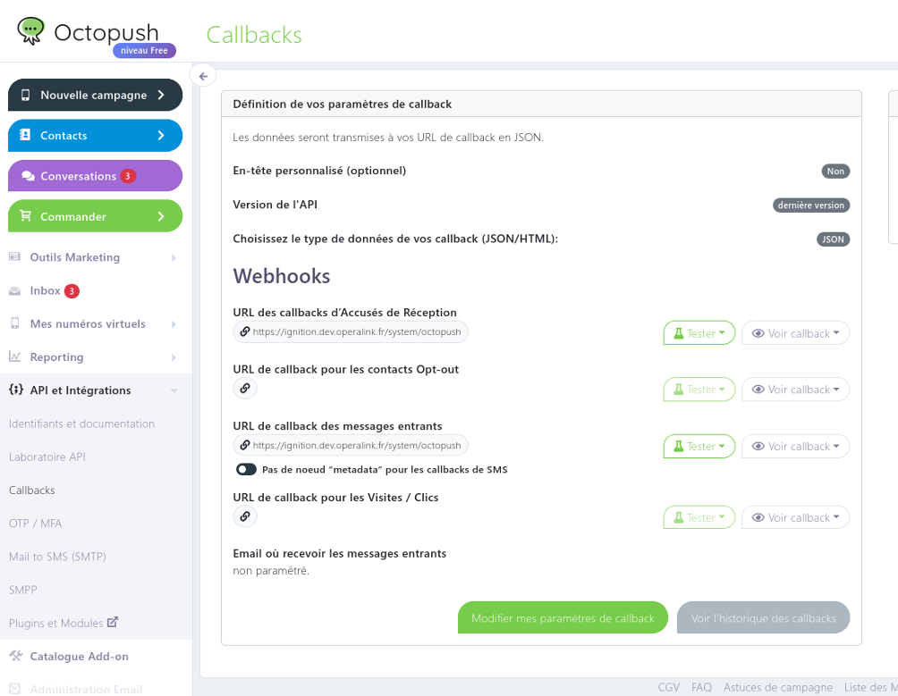

Module Octopush
Téléchargement du module
Téléchargez le module Octopush :
Utilisation du module
Alarm Notification Profile
Suite à l’installation du module, créer un Alarm Notification Profile de type Octopush Notification :

Paramétrer l’Alarm Notification Profile avec les informations suivantes :

Main
- Name * (champ texte) : Nom de l’instance Alarm Notification Profile.
- Description (champ texte) : Description de l’instance Alarm Notification Profile.
- Enabled * (vrai ou faux) : Activation/Désactivation de l’Alarm Notification Profile.
Credentials
- API Login * (champ de texte) : Login de l’API d’Octopush.
- API Key * (champ texte) : Clé d’API fourni par Octopush.
Auditing
- Audit Profile (Liste déroulante) : Profil d’audit de l’Alarm Notification Profile.
Alarm Pipeline
Ajouter un Notification Block avec Octopush :

- Message : Contenu du message à envoyer.
- Throttled Message : Contenu du message à envoyer en cas de multiples Alarm Events.
- Voice : Envoi par « SMS Vocal » ou non. L’« SMS Vocal » génère un appel et le message est lu via une synthèse vocale.
- With Reply : Sélection de l’acquittement ou non. Génère un numéro aléatoire à cinq chiffres que le destinataire doit renvoyer pour acquitter l’Alarm Event. En « SMS Vocal », l’utilisateur doit saisir le code énoncé avec le clavier du téléphone avant la fin de l’appel.
Important
La gestion des acquittements nécessite que le serveur Ignition accepte les requêtes HTTP provenant d’Octopush.
La configuration sur l’interface admin d’Octopush des callbacks suivant est nécessaire : * Messages entrants pour les SMS textes * Accusés de réception pour les SMS vocaux
Le format des callbacks est le suivant https://[IP ou nom de domaine]/system/octopush :

- Test Mode : Configuration du mode simulation de l’API Octopush. Permet de tester le bon fonctionnement de l’API sans envoi effectif de message.